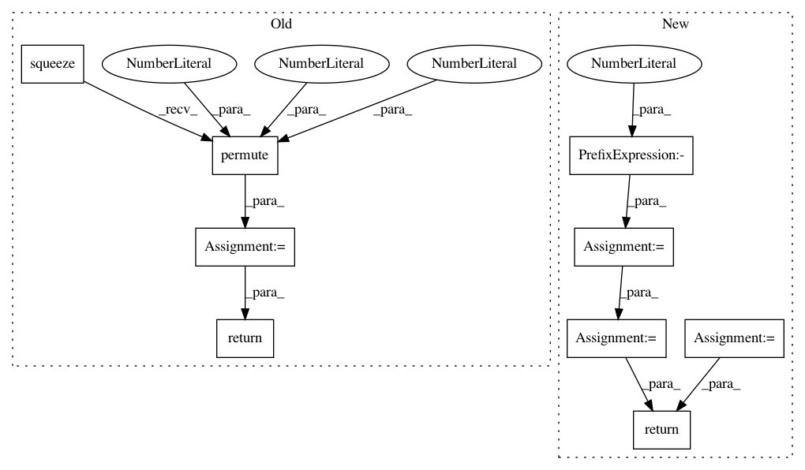

2ffbfa3a6bd3b8de8e21a762489346054dcd9ccc,nussl/separation/deep/deep_mask_estimation.py,DeepMaskEstimation,extract_features,#DeepMaskEstimation#,53
Before Change
features = self.model(input_data)
if "estimates" not in features:
raise ValueError("This model is not a mask estimation model!")
features = (
(features["estimates"] + 1e-6) /
(input_data["magnitude_spectrogram"].unsqueeze(-1) + 1e-6)
).squeeze(0)
features = features.permute(3, 1, 0, 2)
features = features.data.cpu().numpy()
return features
def run(self, features=None):
After Change
embedding = output["embedding"]
// swap back batch and sample dims
if self.metadata["num_channels"] == 1:
embedding = embedding.transpose(0, -2)
embedding = embedding.squeeze(0).transpose(0, 1)
return embedding.cpu().data.numpy()
In pattern: SUPERPATTERN
Frequency: 3
Non-data size: 9
Instances
Project Name: interactiveaudiolab/nussl
Commit Name: 2ffbfa3a6bd3b8de8e21a762489346054dcd9ccc
Time: 2020-03-12
Author: prem@u.northwestern.edu
File Name: nussl/separation/deep/deep_mask_estimation.py
Class Name: DeepMaskEstimation
Method Name: extract_features
Project Name: ruotianluo/self-critical.pytorch
Commit Name: c8fadd2d970f1c62ae8a842464056263f8d1232f
Time: 2017-02-13
Author: rluo@ttic.edu
File Name: resnet.py
Class Name: myResnet
Method Name: forward